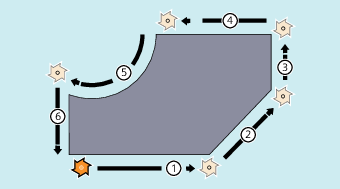

Konturelemente
Die programmierte Werkstückkontur kann sich aus folgenden Konturelementen zusammensetzen:
-
Geraden
-
Kreisbögen
-
Schraubenlinien (durch Überlagerung von Geraden und Kreisbögen)
Fahrbefehle
Für die Herstellung der unterschiedlichen Konturelemente gibt es spezielle Fahrbefehle.
Ihre Beschreibung findet sich in folgenden Kapiteln:
Zum schnellen Positionieren des Werkzeugs und zum Umfahren des Werkstücks werden die Achsen im Eilgang (G0) verfahren.
| Achtung |
Werkzeugeingriff undefiniertVor Beginn eines Bearbeitungsablaufs muss das Werkzeug so vorpositioniert werden, dass eine Beschädigung von Werkzeug und Werkstück ausgeschlossen ist. |
Zielpositionen
Ein Bewegungssatz enthält die Zielpositionen für die zu verfahrenden Achsen (Bahnachsen, Synchronachsen, Positionierachsen).
| Hinweis |
|
Eine Achsadresse darf pro Satz nur einmal programmiert werden. |
Die Programmierung der Zielpositionen kann in kartesischen Koordinaten oder in Polarkoordinaten erfolgen:
Startpunkt-Zielpunkt
Die Fahrbewegung verläuft immer von der zuletzt angefahrenen Position zur programmierten Zielposition. Diese Zielposition ist wiederum die Startposition für den nächsten Fahrbefehl.
Werkstückkontur
Nacheinander ausgeführt ergeben die Bewegungssätze die Werkstückkontur:

Bewegungssätze beim Drehen
Bewegungssätze beim Fräsen